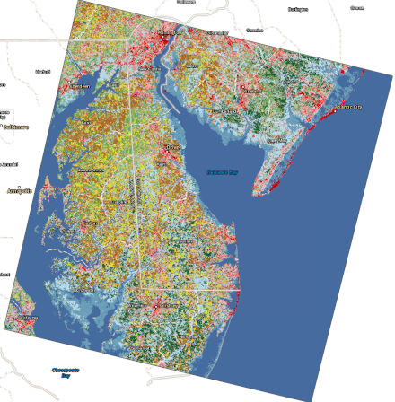
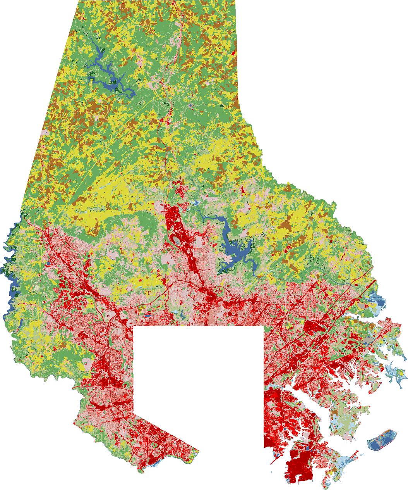
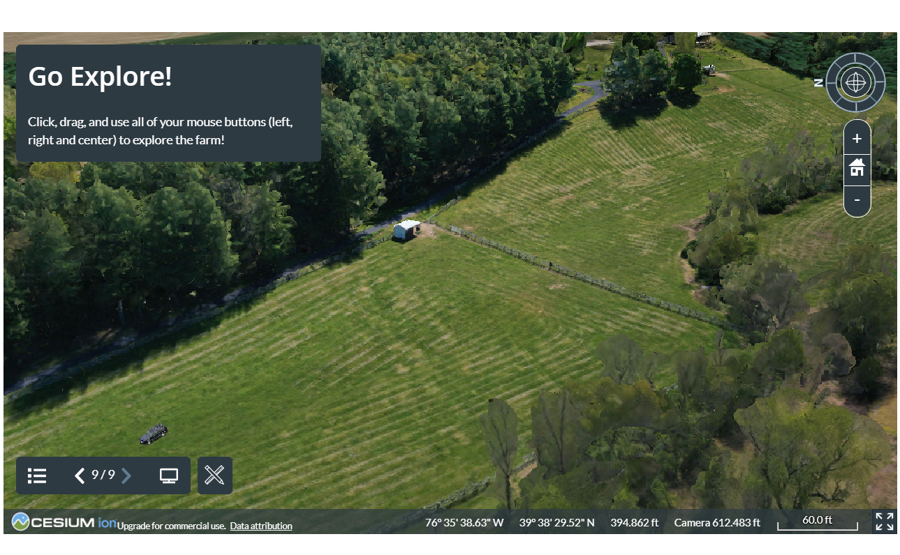

Eastern Shore Deep Learning Land Classification
A web app viewing deep learning derived land classifications on the Eastern Shore acquired April 03, 2021 via Landsat-8.

Identifying Development in Baltimore County, MD
Change detection of land classifications between 2015 and 2020 via Landsat-8 and deep learning models

Theodore Roosevelt Nat'l Park - North Unit
An interpretive look at one of my favorite parks

St Rita Church & School
Just outside Dundalk Historic District; the St Rita Catholic Parish is an important historic community in Dundalk, MD.

Welcome to Ev'ry Last Scent Farm
Using photogrammetry assets to explore E.L.S. Farm in White Hall, MD

Ev'ry Last Scent Farm Progression Project
Studying the vegetation through the seasons on E.L.S. Farm in White Hall, MD

Donna
Rough vehicle photogrammetry of my 1997 2-door Jeep Cherokee Sport